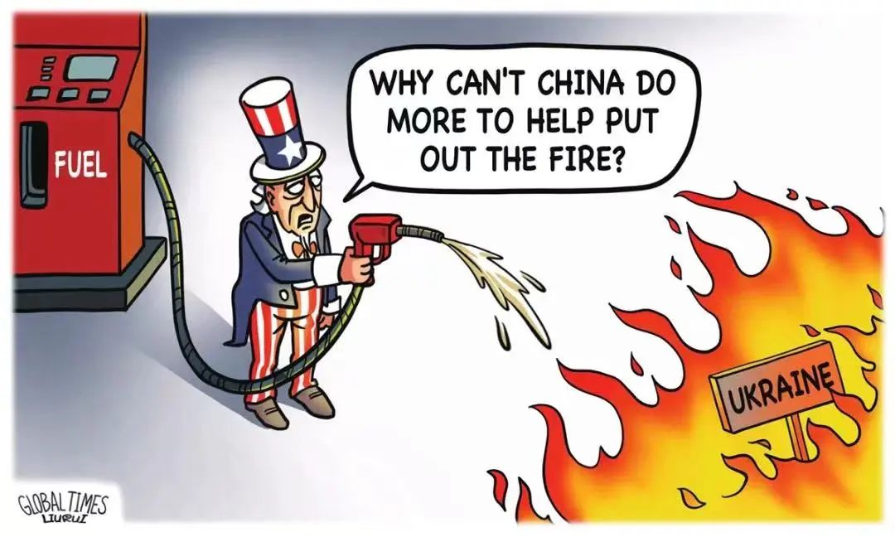

收录于合集
以下文章来源于欧亚系统科学研究会 ，作者于滨
 欧亚系统科学研究会 .
欧亚系统科学研究会 .
让系统增值，为创新添砖

导读
俄乌冲突以来，国际社会日益分裂成为以美国和西方为首的“制裁派”，和以巴西、南非、印度、中国等为代表的广大的非西方国家，后者秉持中立，拒绝“选边站”的逻辑。国际社会这一泾渭分明的态势，让我们回忆起美苏冷战期间在第三世界兴起的不结盟运动， 然而，俄乌冲突中的中立立场日益遭受西方意识形态和价值观上“非敌即友”逻辑的排挤。我们必须直面回应：一种有原则的中立（principled neutrality），对这个日益分裂和对抗的世界意味着什么？
本文作者指出， 中国在俄乌冲突上基于原则的中立，意在促使各方达成均衡和可持续安全。中国以客观公正的立场应对乌克兰问题，是基于人道主义、实用主义和政治现实主义的多种考量。 中国的有原则的中立政策，不仅适用于当前的乌克兰战争，也应用于2014年的乌克兰-克里米亚危机、2008年的格鲁吉亚- 俄罗斯冲突，以及1980年代以来的朝核问题。中国在处理与俄罗斯的关系时同样秉持公正务实原则，中俄灵活而友好的战略伙伴关系是中俄（苏）关系经历半个世纪的动荡之后发展出来的一种正常关系。中俄关系的稳定，意味着两个大国历史性地回归以互不干涉内政为核心的威斯特伐利亚主义，维持这种“正常”关系本身即是对国际秩序的重大贡献。
冷战后西方的单边主义安全逻辑使西方陷于一场二战以来最严重的新一轮的“西方内战”（Western civil war）之中，而俄乌冲突所引发的粮食危机、能源短缺、通货膨胀等世界性影响已经表明，与这场冲突毫不相干的非西方世界正为此付出巨大代价。 这场“西方新内战”召唤真正的中立和公正，以阻止更大的灾难发生。欧亚系统科学研究会特编译本文，供读者思考。文章原题为China’s Neutrality In A Grave New World，原刊于 Russia in Global Affairs ，仅代表作者本人观点。感谢于滨老师授权并审校译文。
身处国际社会至暗时刻,
中国的中立意味着什么?

▲ 火上浇油还是雪中送炭？图源：Global times
一个幽灵正在西方徘徊——中俄联盟的幽灵，无论是确有其事，还是捕风捉影。如今西方正竭尽全力向乌克兰运送致命武器，美国却突然对华发难，质疑中国在乌克兰问题上一贯的中立立场。 然而，中国中立不仅是为了自身利益，也是为了维护世界稳定。如今乌克兰战祸不已，满目疮痍，且冲突很可能长期化，甚至进一步升级。在基辛格一直警示的充斥大规模杀伤性武器和人工智能的“严峻新世界”中（Kissingerian grave new world），美国这一“非友即敌”的2.0版本犹如一纸最后通牒。
01
中国特色的中立
中国在乌克兰问题上的中立态度是真诚的，因为俄罗斯和乌克兰都是中国的朋友或“战略伙伴”，中国驻华盛顿大使秦刚将这一立场其定义为“客观公正”。 中国要二者之间选边站是非常困难的，如果不是完全不可能的话。事实是，持续的战争正在严重损害中国的利益，包括“一带一路”倡议下庞大的对外投资项目，而乌克兰正是“一带一路”的重要区域枢纽。2021年，中乌贸易额同比增长35%，规模达193亿美元。尽管这比中俄贸易额（1470 亿美元）要小得多，但中乌贸易额在过去五年中已经翻了一倍多。
早在 2013 年底，当乌克兰陷于俄罗斯和欧盟之间的两难困境时，中国一举向乌克兰提出 80 亿美元的投资协议。尽管这比俄罗斯的150 亿美元援助计划要小，但它远多于欧盟44 亿欧元的计划。
中国在乌克兰问题上的中立并非纯粹出于商业目的，它是人道主义、实用主义和政治现实主义共同作用的结果。4月1日，在与欧盟领导人夏尔·米歇尔（欧洲理事会主席）和乌尔苏拉·冯德莱恩（欧盟委员会主席）的电话会议中，中国领导人敦促各方为乌克兰战争的政治解决而努力，同时避免局势升级和更大的人道主义灾难。从长远来看，中国领导人呼吁欧盟/美国和俄罗斯之间进行对话，以构建“均衡、有效、可持续的欧洲安全机制”。
对许多中国人来说，乌克兰战争的破坏性令人痛心。中国人民大学最近的一项研究表明，30%的受访者支持俄罗斯的“特别军事行动”，20%支持乌克兰，40%保持中立。许多人担心，当前在乌克兰冲突上争先恐后、火上浇油的引战言行，会导致战争进一步扩大化。在大规模杀伤性武器时代，必须在政治和外交领域寻求冲突的解决之道。因此，中国政府呼吁各方保持克制并通过谈判尽早结束战争，这得到了中国人的广泛支持。中国捐助的三批人道主义援助物资已运往乌克兰，后续更多援助物资也在路上。
因此，中国的中立不仅仅是被动应对，而是基于原则的，意在促使各方达成均衡和可持续安全。 相比之下，美国在巴巴罗萨行动（译注：1941 年6 月22日—1942年1月，纳粹德国在第二次世界大战中发起侵苏行动的代号）和珍珠港事件（1941年12月7日）之间数月中的孤立主义并非那般光鲜（not-so- splendid isolation）。当时的参议员哈里·杜鲁门对此直言无讳。德国入侵苏联两天后，《纽约时报》援引这位未来的美国总统的话称：“如果德国占上风，我们应该帮助俄罗斯，如果俄罗斯占上风，我们就帮助德国，这样我们就能尽可能让他们互相残杀……” 不到六个月后，珍珠港事件爆发，美国卷入战争，接下来的历史人尽皆知。
进入21 世纪，中国在混乱的世界中稳步崛起，并从历史上的儒家思想汲取智慧。儒家思想的一个关键组成部分是中庸，即保持中道、避免极端。在1950-1970年代内外政策发生巨大波动后，中国从1982年开始奉行不结盟的独立自主外交政策，基辛格在其2011年的《论中国》（On China）一书中，将其描述为“公正务实”（impartial and pragmatic），这与秦刚大使的表述非常相似。 这种立场不仅适用于当前的乌克兰战争，也应用于2014年的乌克兰-克里米亚危机、2008年的格鲁吉亚-俄罗斯冲突，以及1980年代以来的朝核问题， 因为中国反对任何破坏半岛稳定的举动。
02
西方现实主义者去哪了？
在中国公共舆论空间对乌克兰问题的各种不同观点中，乔治·凯南等西方现实主义者占据一席之地。凯南在25 年前曾警告说，北约东扩是“整个后冷战时代美国政策最致命的错误”（the most fatal error）。在 1997 年向参议院外交关系委员会作证时，杰克·马特洛克（Jack Matlock，1987-1991年美国驻苏联大使）也表达了类似的深切担忧，即“误入歧途的”北约扩张“很可能被作为自冷战结束以来最严重的战略失误而载入史册。” 2014 年乌克兰-克里米亚危机后不久，基辛格也警告说，鉴于其几个世纪以来作为俄罗斯一部分的独特历史，乌克兰只有作为俄罗斯与西方之间“桥梁” 而非战场，才能获得生存和繁荣。 西方现实主义者的这些观点以前只出现在中国的学术圈子里，现在则在公共空间中随处可见。
对于许多中国人来说，政治现实主义在西方关于乌克兰问题中的语境中的缺位是很奇怪的。 如果这些清醒的、尽管“政治上不正确”的观点在西方得到重视，乌克兰目前的战争本可以避免。因此，西方关于俄罗斯“无端入侵” （unprovoked invasion）乌克兰的说法不能令多数中国人信服。相较于亨利·基辛格所描述的美式唯我论（solipsism）——无法以不同的方式看待世界，中国人的思想要开放得多。
03
中俄之间: 一种“独具一格”的成熟关系
2022年2月4日，中俄领导人在北京冬奥会开幕前签署的联合声明称：“两国友好没有止境，合作没有禁区”。 尽管如此，这种长达数十年的“战略伙伴关系”的最新发展，并不意味着结成军事联盟。它没有类似于北约第5条规定的相互约束机制，亦即在冲突情况下自动锁定的彼此的承诺。 实际上，在克里米亚、中国台湾、中国南海、中印边界争端等问题上，莫斯科和北京几乎对彼此的所有“核心利益”都保持不置可否或中立的态度。
这种友好而灵活的战略伙伴关系框架的关键驱动因素之一是历史的经验教训。1950年至1989年间，中苏关系经历了从同盟到敌对的急剧转向，双方为此付出巨大代价。此后，两国将高度意识形态化和危险的军事化关系转化为一种务实的共存关系，其核心因素是意识形态缺位。在中苏在“蜜月期”（1949-1959年），意识形态因素夸大了的双方的友谊，又放大了中苏长达30 年间“决裂期”（1960-1989年）的分歧。 从某种意义上说，目前的中俄“战略伙伴关系”，无论是否有止境，都是双方在经历“最好”和“最坏”时代之后的一种正常关系。
自 1989 年以来的这种务实关系，也许是自1689年中俄《尼布楚条约》以来对两个大国最稳定、最平等（总体而言）和危害最小的关系。这碰巧也是双方都经历了巨大的社会经济政治转型的时期。中国或许比世界上任何其他国家都更了解俄罗斯在后苏联时代的痛苦转型中所面临的巨大风险、挑战和困难。而且，与西方一些国家不同，中国没有利用俄罗斯的弱点来获取任何短期利益。俄罗斯的民族自豪感（pride）应该得到尊重，尤其是在俄罗斯处于历史性衰退的时刻。
中俄战略伙伴关系并非一帆风顺。相反，它的某些方面“存在麻烦”，甚至是“有争议的”，普京在2017年10月的瓦尔代演讲中如是表示。但他补充说，这些方面的问题经过深思熟虑后“找到了妥协的解决办法”，因此没有“使局势陷入僵局”。 双方都将当前的中俄关系描述为“成熟”的关系，这与1950至1970年代高度政治化的过往经历形成鲜明对比。 中俄完全有理由排除外部干扰，继续保持这种关系。
最后，中国和俄罗斯是两个大型的文明实体，无论其经济地位如何，它们都具有追求各自独立的外交和战略目标的物质和思想能力。它们在外交政策中的这种倾向伴随着它们在不同程度上对其文化/宗教遗产的回归：即中国的儒家思想，以及俄罗斯带有浓厚东正教色彩的“温和保守主义”。
04
“西方新内战”亟需真正的中立
中俄双边关系的稳定和意识形态因素的缺位对世界其他地区产生了巨大影响。 这意味着这两个大国历史性地回归以互不干涉内政为核心的威斯特伐利亚主义（Westphalianism），威斯特伐利亚主义是现代世界主权国家体系的基础，它虽然发轫于西方，但现在基本上被西方完全抛弃了。
除了北约不断东扩外，冷战后西方无休止的民主促进和政权更迭战争构成所谓“自由国际秩序”，在尼尔·弗格森（Niall Ferguson）看来，这种秩序既不自由，也谈不上有序。从这个意义上说，那些警告冷战卷土重来的人，似乎对历史缺乏了解。 冷战期间，尽管世界超级大国在军事和意识形态上相互对峙，但由于存在各种正式和非正式的游戏规则、包括各种可验证的军备控制机制，它们之间恰恰维持了“长期和平”（long peace）。 在这个两极体系中，安全是相互的，双方都有克制，特别是在 1962 年古巴导弹危机之后，美国总统肯尼迪公开呼吁“真正的和平，那种让我们的生活值得过下去的和平，那种让人类和国家能够发展、饱含希望并为他们的后代建立更美好生活的和平——这不仅是美国人的和平，而且是所有人的和平，不仅是我们时代的和平，而且是永久的和平。”
现今的世界离这种理想主义和清醒认知相去甚远。随着西方自由主义与其社会主义对手（苏联）的均衡被打破，西方以牺牲包括俄罗斯在内的世界其他地区的安全为代价，追求单边和绝对安全。因此，乌克兰成为了凯南所说的“致命错误”引发的反弹（blowback）。
在发表于1993年的《文明的冲突》这篇极具争议的论文中，亨廷顿提出了区别于福山版本的自由主义历史“终结论”的另一套终结论，即冷战的终结是“西方内战”（从1648年威斯特伐利亚条约到1991年）的终结。 回头看，亨廷顿的终结论不仅低估了西方自我毁灭的能力，而且低估了所谓“西方内战” 对非西方的影响。20 世纪的“西方内战”是祸及非西方世界大部分地区的“全面战争”。 仅在二战中，俄罗斯和中国的伤亡人数分别为2700万和3500万。除此之外，人们不应忽视 20 世纪之前西方在世界范围内进行的一切征战和殖民统治。 或许正因为如此，许多非西方国家——包括印度、巴西、南非等——都在避免制裁俄罗斯，而是呼吁克制和谈判。
保持温和与公正远比选边站更具挑战性，特别是当世界正经历二战以来最危险的冲突时刻。 斯坦福大学的斯科特·萨根（Scott Sagan）的研究标明，一战前夕，欧洲两个势不两立且具有强大约束力的联盟因为受到联盟承诺（interlocking commitment) 的驱使，在一周内相互宣战。有鉴于此，北京目前的原则性和公正中立应该受到赞赏，它对选边站的危害保持了充分警惕，从而避免了在欧亚大陆上出现另一个或将引爆大战的对抗性联盟。在大规模杀伤性武器和假新闻大行其道的时代，国际社会应该为对话、和平和中立留出空间，以实现包容、不可分割和可持续的安全。
*英文版原文链接：
https://eng.globalaffairs.ru/articles/chinas-neutrality/
*俄文版原文链接：
https://globalaffairs.ru/articles/nejtralitet-kitaya/
排版 | 张佳
文章为欧亚系统科学研究会编辑，文章观点不代表本平台观点。